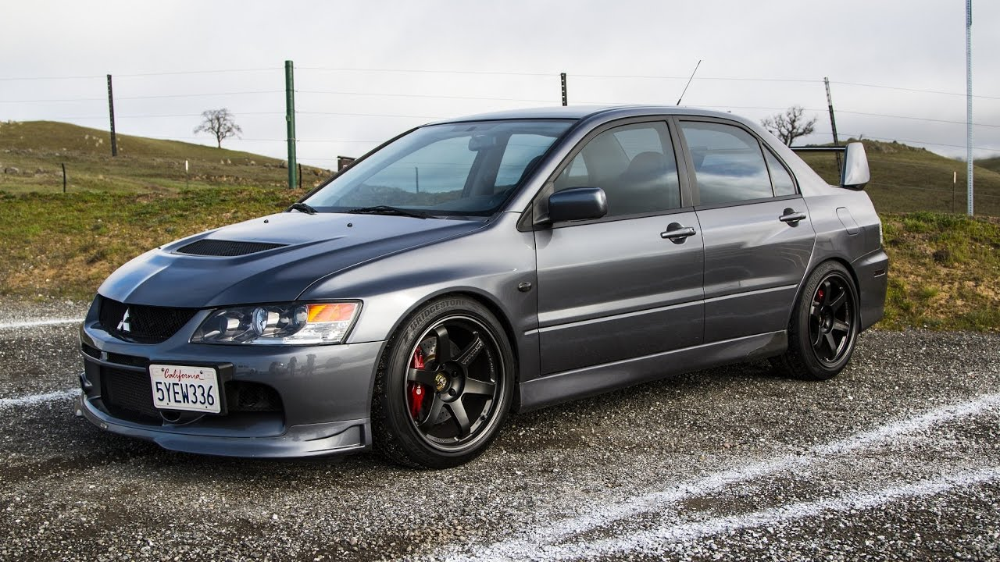
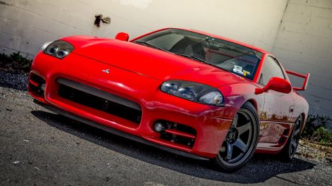
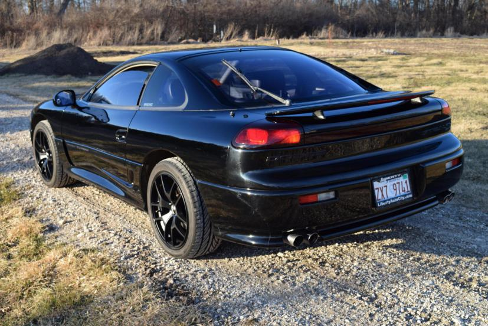
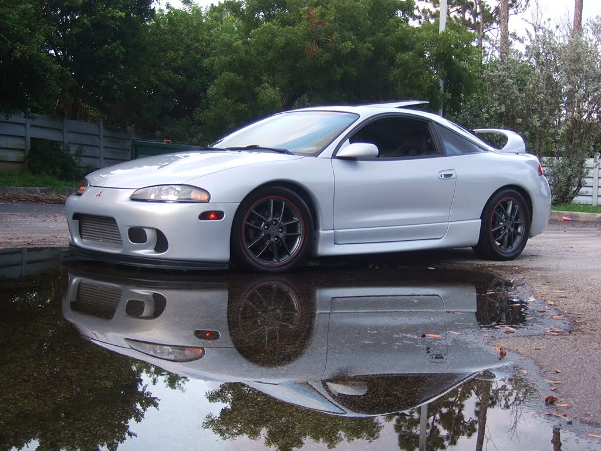

The Mitsubishi Lancer Evolution is a direct competitor to the Subaru WRX STI. Both heavily competed to create the best rally cars during the 1990's.
The result of their competition created some of the best street legal rally cars for car enthusiasts to enjoy.

This car was made in conjunction with Chrysler in a merger known as Diamond Star Motors.
There are two versions of this car, the one that Mitsubshi created was called the 3000GT.
The car Chrysler created was called the Dodge Stealth, pictured below.

The Dodge Stealth was discontinued after only a few years.

The Mitsubishi Eclipse was another car that gained its fame through the "Fast and the Furious" movie franchise.
In my opinion, the 2nd generation, or "2G Eclipse," was the best looking eclipse eclipse out of the 4 different face lifts that the car underwent throughout its existence.